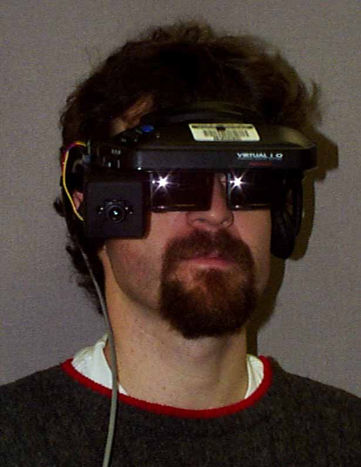
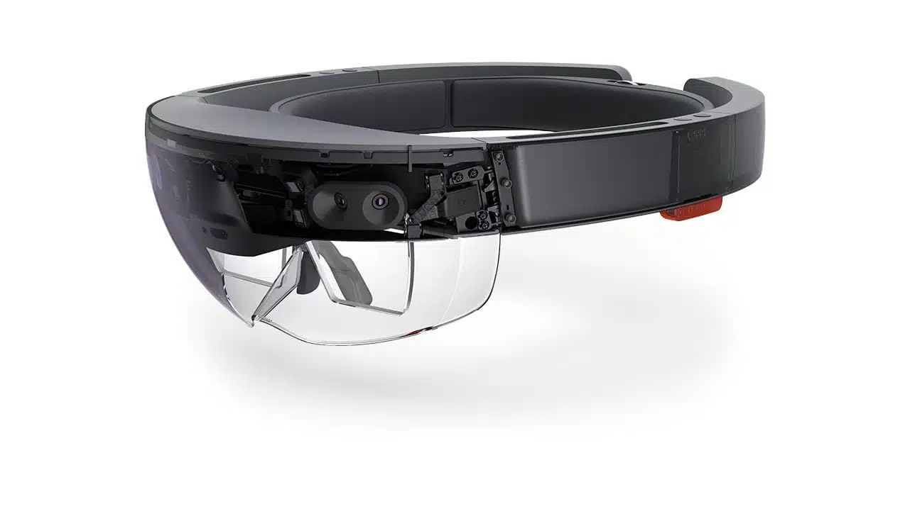
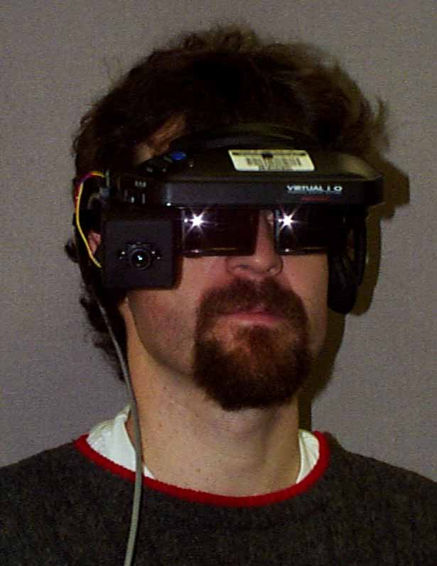
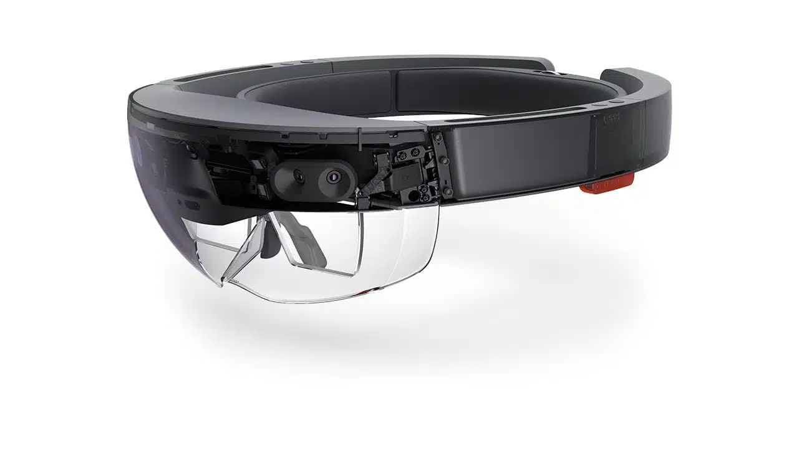

Relación con la IPO
Las gafas holográficas de WiMi permiten al usuario establecer comunicación con el ordenador a través de su propio cerebro.
Esto se realiza mediante las EEG (señales electroencefalográficas) que interactuan con el software instalado en las
propias gafas a la vez que trabajan con datos en tiempo real para así minimizar el tiempo de respuesta.
Más adelante se
profundizará en los múltiples beneficios que puede traer a diversos sectores y a personas de movilidad reducida que con su cerebro
serán capaces de interactuar con un sistema.
HISTORIA Y EVOLUCIÓN
El hecho que marcó el comienzo de las gafas inteligentes fue el desarrollo del primer prototipo de un casco de realidad aumentada en 1968 por Ivan Sutherland. El casco tenía varios defectos de diseño, como que era demasiado pesado para su uso. Sin embargo, Sutherland consiguió su objetivo principal: construir una pantalla que superponía gráficos.
En 1980, el inventor e investigador Steve Mann desarrolló el EyeTap. Éste consistia en una cámara telesférica
de estilo monocular que muestra imágenes generadas por un ordenador en la escena registrada por el usuario, lo que crea
una realidad medida por la computadora.
Cabe destacar, que este aparato era capaz de mostrar texto y vídeo gracias al
tubo de rayos catódicos del que estaba compuesto.
Ya en el nuevo siglo, en el año 2000 Hirokazu Kato desarrolló un software abierto capaz de crear aplicaciones de realidad aumentada mediante dispositivos móviles lo que impulsó de lleno el desarrollo de las gafas holográficas.
El desarrollo se incentivó, y en 2003 se lanzaron las primeras gafas de realidad aumentada disponibles comercialmente desarrolladas por la empresa Vuzix
En 2011, la empresa Epson Moverio las primeras gafas inteligentes que ofrecieron una experiencia AR a un público más amplio.
En 2012, Google dio la sorpresa al lanzar su propias gafas de realidad virtual. Lo novedoso de esto fue que intentaron simular un formato de "manos libres" como algunos teléfonos inteligentes de la época. Sin embargo, estas gafas no tuvieron un gran éxito por temas de privacidad y precio.
En 2016 otro gigante tecnológico, Microsoft , lanzó una de las primeras gafas holográficas (HoloLens) destinadas principalmente a los sectores sanitario y educativo. La característica principal fue el superponer hologramas en tiempo real.
En 2021, Meta junto con RayBan lanzaron unas gafas muy mediáticas y muy vendidas. Aunque estas gafas se centraron principalmente en la grabación de videos y realización de fotos, representan un paso muy significativo en el mundo de la realidad holográfica.
En 2024, otras empresas como Xiaomi y Apple lanzaron también productos similares como las tan conocidas Apple Vision Pro
que ya integran diversas características de seguridad y realidad virtual innovadoras.
Así , también en 2024
se lanzan las V-BCI Holographic glasses.
 




¿Qué tenemos actualmente?
Las gafas holográficas de WiMi Hologram Cloud ofrecen una de las mejores experiencias en la interacción persona-ordenador. Estas gafas suponen una revolución, puesto que ya no se basan en gestos y voz como otros modelos anteriores (los cuales supusieron un gran avance en la IPO), sino que realizan una conexión directa entre el cerebro y el ordenador mediante señales EEG. Además resulta un dispositivo ligero que desafía a lo que conocíamos antiguamente como la interacción tradicional entre humanos.
PROTOTIPO DE LAS WiMi
Imagen generada con tecnología DALL-E 3 a partir de los datos proporcionados pueso que al ser un dispositivo tan novedoso no hay imágenes disponibles en la web
BENEFICIOS QUE APORTA
CAMPO SANITARIO
Control sin contacto en procedimientos médicos: los cirujanos pueden manipular imágenes, datos de pacientes y otras informaciones médicas a través de señales cerebrales, sin necesidad de tocar superficies, lo que reduce el riesgo de infecciones.
Asistencia remota en cirujías: las gafas permiten que especialistas o cirujanos en distintos lugares colaboren en tiempo real, compartiendo su visión y datos, mejorando la precisión y los resultados de intervenciones complejas.
Mejora en el diagnóstico y tratamiento: gracias a la interacción directa con imágenes y datos en tiempo real, los cirujanos pueden analizar resultados médicos con mayor rapidez y precisión, haciendo posible diagnósticos más exactos y mejores decisiones clínicas.
CAMPO EDUCATIVO
Interacción inmersiva con contenidos educativos: los estudiantes pueden manipular modelos complejos de objetos en 3D, como moléculas o sistemas solares, a través de señales cerebrales.Esto permite aprender de manera más visual e interactiva, permitiendo a aquellos estudiantes con menor grado de atención el comprender temas abstractos
Accesibilidad para estudiantes con discapacidades: los estudaintes con limitaciones físicas pueden interactuar con el contenido educativo sin la necesidad de usar dispositivos físicos como teclados o ratones, facilitando una experiencia de aprendizaje más inclusiva
Aprendizaje personalizado en tiempo real: la tecnología permite a los docentes monitorizar el progreso y la respuesta cerebral de los estudiantes a ciertos estímulos, ajustando las lecciones en tiempo real según las necesidades y el nivel de comprensión de cada estudiante, mejorando la personalización del proceso educativo.
CAMPO INDUSTRIAL
Asistencia en tareas de mantenimiento y reparación: estas gafas permiten a los técnicos visualizar instrucciones en tiempo real. Esto, al igual que en el campo sanitario, mejora la precisión y reduce errores de los operarios al tener las manos libres. Esto es gracias a las señales neuronales EEG.
Control mental de maquinaria compleja: gracias a la conexión neuronal, los operarios pueden manipular y controlar máquinas industriales solo con sus pensamientos, lo que reduce la necesidad de controles físicos o manuales, mejorando la rapidez de la operación y minimizando los errores humanos.
Supervisión remota y manos libres: los técnicos pueden usar las gafas para monitorizar y controlar procesos de producción mientras se desplazan por la planta, utilizando la interfaz neuronal para activar o ajustar equipos sin interrumpir su flujo de trabajo. Así, se mejora la productividad sin la necesidad de utilizaar dispositivos externos.
Materiales de referencia...
Para encontrar más información:
Página oficial de WiMi Hologram Cloud